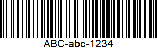

Céréale Frosties
Informations sur la marque
Code barre : 
Ingredients
Maïs, sucre, arôme de malt d'Orge, sirop de glucose, sel, Vitamines et Minéraux : Carbonate de calcium, fer.
ATTENTION CE PRODUIT CONTIENT DU GLUTEN !
Valeurs nutritives
Caractéristiques du produit
- Quantité : 600g
- Conditionnement : Carton
- Marques : Kellogg's
- Catégorie : Aliments et boissons à base de végétaux, Aliments d'origine végétale, Céréales et pomme de terre et Petit-déjeuners.
- Labels, certifications, récompenses : Végétariens, Kascher, Beth Din de Manchester
- Magasins : Intermarché, Magasin U, Cora, Leclerc
- Pays de vente : Belgique, France